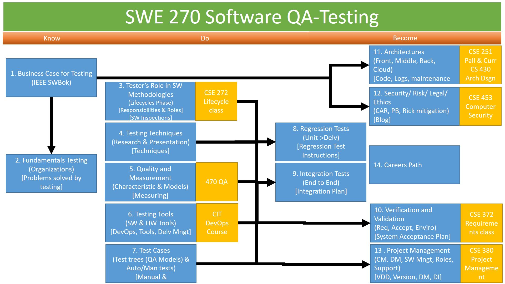

Syllabus
Explore Testing in relation to S/W Development, Business, Career, System Architecture, Quality, and Security. Appraising different tools (manual to automation), process, and techniques. Create Test Plans & Processes scaling from unit to system.
Successful graduates of CSE 270 will:
- Argue (5) how Testing relates to S/W Development, Science and Engineering activities
- Classify (4) Professional, Business, Career field, Security Issues
- Appraise (5) different testing tools and justify which to use in a given scenario
- Assess (5) the different Testing Techniques and discriminate the different use of each
- Prepare (6) and Implement (3) Test Plans at different Levels using different Processes and Tools.
Course Materials
Materials for this course:
- A collection of articles whose links will be provided in the course
There will be additional material available through I-Learn, including:
- Schedule
- Assignments
- Additional material pertaining to a given week
Assessment
Assessment, Grading, Schedule will be managed by BYU-Idaho iLearn (Learning Management System).
Course Overview

Policies
You may work with your classmates, but all submitted work must be original. The penalty for copying or plagiarizing of assignments might be one or more of the following: zero on an assignment, being asked to withdraw from the class, a failing grade in the class, or disciplinary action by the university.
Homework assignments are to be completed as scheduled. Late work is generally not accepted. However, assignments may be rescheduled for a limited number of emergency situations if you discuss your situation with me before (not on and especially not after) the scheduled due date. There will be no routine extensions of due dates; be prepared to justify any requests for extensions.
Accessibility
BYU-Idaho is committed to providing a working and learning atmosphere that reasonably accommodates qualified persons with disabilities. Reasonable academic accommodations are reviewed for all students who have qualified documented disabilities. Services are coordinated with the student and instructor by BYU-Idaho Disability Services. If you need assistance or feel you have been unlawfully discriminated against on the basis of disability, you may seek resolution through established policy and procedures.
If you have any disability that may impair your ability to complete this course successfully, please contact Disability Services as soon as possible, preferably before the beginning of the semester, in order to ensure that you receive appropriate accommodations.
Disability Services Contact Information:
- Phone: (208) 496-9210
- Email: disabilityservices@byui.edu
- Fax: (208) 496-5210
- Website: http://www.byui.edu/disabilities/disability-services
Discrimination
BYU-Idaho prohibits sex discrimination against any participant in its education programs or activities. Prohibited sex discrimination includes incidents of sexual harassment (including sexual violence), dating violence, domestic violence, sexual assault, and stalking (collectively “sexual misconduct”).
As an instructor, one of my responsibilities is to help create a safe learning environment for my students and for the campus as a whole. University policy requires that I report all incidents of sexual misconduct that come to my attention. If you encounter sexual misconduct, please contact the Title IX Coordinator at titleix@byui.edu or 208-496-9209. Additional information about sexual misconduct and available resources can be found at www.byui.edu/titleix